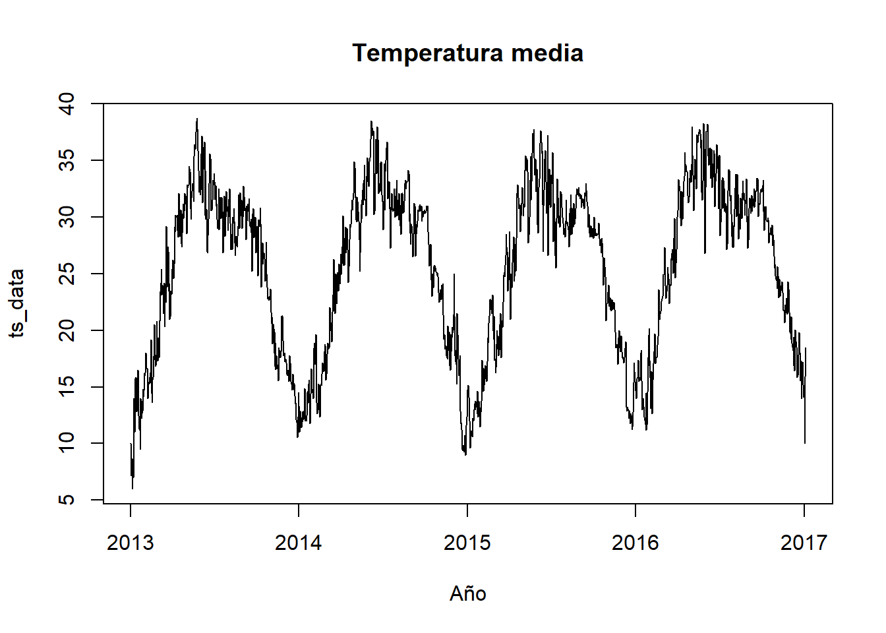
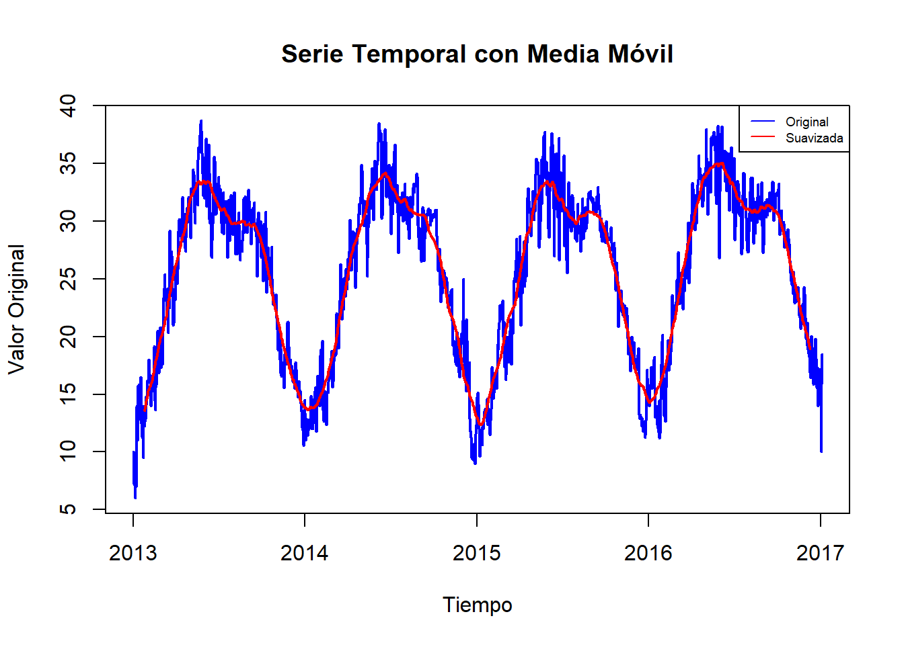
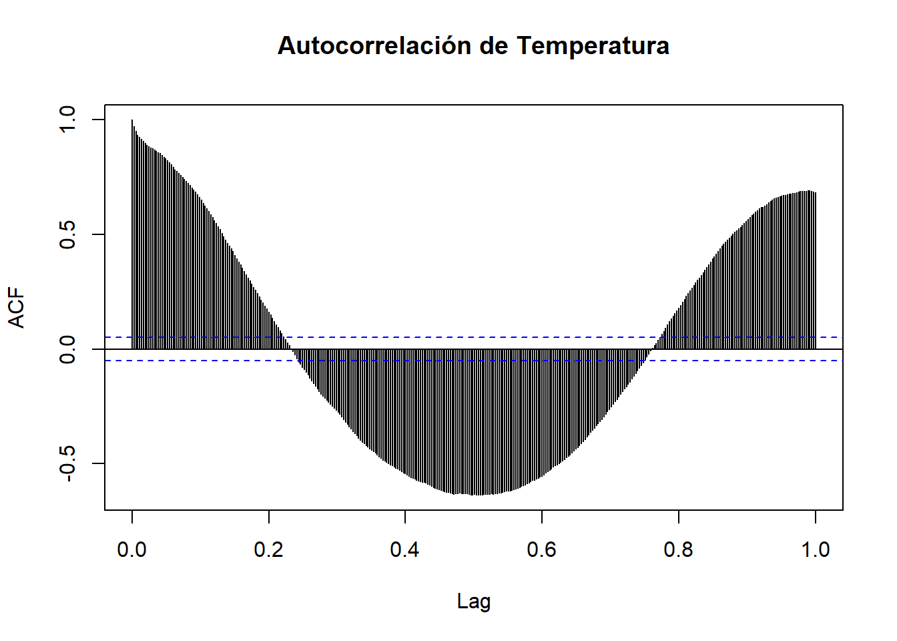

2 Análisis Exploratorio de Datos (EDA): Promedio Móvil, Rezagos y Estacionalidad
En esta sección, proporcionaremos una vista general de los datos utilizando algunas técnicas y pruebas, que incluyen la implementación del promedio móvil, análisis de rezagos y detección de estacionalidad. Estas herramientas ayudan a comprender mejor el comportamiento general de la serie temporal de la temperatura.
2.1 Carga de datos
Se carga toda la base de datos y se elige solamente la variable temperatura. Con un total de 1.576 registros.
# Cargar datos
data1 <- read.csv("C:/Maestria Ciencia de Datos/TStempe/DailyDelhiClimateTrain.csv", sep = ",", dec = ".")
data2 <- read.csv("C:/Maestria Ciencia de Datos/TStempe/DailyDelhiClimateTest.csv", sep = ",", dec = ".")
# Unir datos
data <- rbind(data1, data2)
# Convertir los datos a serie de tiempo
ts_data <- ts(data,start = c(2013, 1), end = c(2017, 4), frequency=365)
# Escoger solo Temperatura media
ts_data <- ts_data[, "meantemp"]2.2 Resumen general de la serie temporal
## Time-Series [1:1464] from 2013 to 2017: 10 7.4 7.17 8.67 6 ...## [1] 0## Min. 1st Qu. Median Mean 3rd Qu. Max.
## 6.00 18.81 27.71 25.48 31.29 38.71A partir de la información proporcionada en el sitio de descarga se sabe que cada registro de la Temperatura media es promediada a partir de múltiples intervalos de 3 horas en un día.
Hay 1576 registros
No hay valores nulos
Hay resgistros desde el 01/01/2013 hasta el 24/04/2017
El valor minimo registro es 6 y el maximo es 38.71
2.3 Visualización de la serie temporal

- A partir de la grafica anterior, se aprecia un patrón periódico anual, con mínimos oscilando entre 5 y 15, y máximos cercanos a 35.
2.4 Media movil
La media movil se aplica a toda la serie para suavizarla y obtener una mejor comprensión de su comportamiento. Este proceso ayuda a resaltar tendencias y a identificar mejor cualquier patrón estacional que pueda estar presente en la serie de temperatura.
library(zoo)
ventana <- 50
serie_suavizada <- rollmean(ts_data, k = ventana, align = "center", fill = NA)
# Grafica la serie original y suavizada
plot(ts_data, type = "l", col = "blue", lwd = 2, main = "Serie Temporal con Media Móvil",
xlab = "Tiempo", ylab = "Valor Original")
lines(serie_suavizada, col = "red", lwd = 2)
legend("topright", legend = c("Original", "Suavizada"), col = c("blue", "red"), lwd = 1, cex = 0.6)
En la gráfica anterior, al observar la serie suavizada se ve representada de manera más clara la estacionalidad de esta variable en el tiempo , confirmando la observación inicial sobre su periodicidad anual. Además, se aprecia que los mínimos son mas grandes y los máximos son menos prominentes que la serie original.
Se eligió una ventana de 50 después de experimentar con diferentes tamaños de ventana, buscando aquella que mostrara de manera más clara el comportamiento de la serie con menos iteraciones o variabilidad de la serie original, con el objetivo de obtener una mejor representación de la serie .
2.5 Rezago
El análisis de rezago es una técnica comúnmente empleada en el análisis de series de tiempo para examinar la correlación entre una serie temporal y sus valores rezagados en el tiempo. Su objetivo principal es identificar patrones temporales, evaluar la dependencia temporal, detectar estacionalidad y facilitar la selección y validación de modelos adecuados.
2.5.1 Calcular la autocorrelación
Se emplea la función ACF para calcular la autocorrelación con un rezago de 365 días, lo que permite analizar un período completo de un año. En el gráfico, el rezago se representará en el eje x en una escala de 0 a 1. Para interpretarlo en días, se multiplica el valor del rezago por 365. Paralelamente, la autocorrelación se visualiza en el eje y, abarcando un rango de -1 a 1.
acf_result <- acf(ts_data, lag.max = 365, main = iconv("Autocorrelación de Temperatura", to = "UTF-8"))
Se observa que a medida de que nos alejamos del primer valor, las correlaciones disminuyen gradualmente hasta que eventualmente se vuelven negativas. El pico más alto negativo se registra en el rezago 196 (equivalente a 195 días atrás), con una correlación de -0.5927, lo que sugiere una reversión de tendencia a medida que los rezagos aumentan. Sin embargo, la correlación vuelve a disminuir hasta el rezago 288 (287 días atrás), donde se observa un nuevo incremento en la correlación. Este patrón sugiere la presencia de un ciclo estacional en los datos de temperatura. Dado que se estan analizando datos de temperatura diaria, esto confirmaria el ciclo estacional anual que se ha venido observando.
Es importante destacar que las correlaciones positivas indican una tendencia a que las temperaturas altas o bajas persistan en el tiempo. Por ejemplo, si hoy es un día cálido, es probable que mañana también lo sea. En contraste, cuando las correlaciones son negativas, sugieren una reversión en la tendencia. Es decir, si hoy es más cálido de lo normal, es probable que mañana sea más frío de lo normal, y viceversa. En este caso, esta reversión negativa se observa entre el rezago 89 (88 días atrás) y el 279 (278 días atrás).
2.6 Estacionalidad
Hasta el momento, hemos observado ciclos distintivos en la serie de tiempo proporcionada, la cual se enfoca en la temperatura. Tales ciclos son típicos en series temporales asociadas al clima. Para determinar la presencia de estacionalidad en una serie de tiempo, se puede utilizar:
Análisis gráfico: Al representar gráficamente la serie de tiempo, es posible identificar patrones recurrentes que sugieren estacionalidad, como la presencia de picos y valles que se repiten en intervalos regulares.
Prueba de estacionalidad de Mann-Kendall: Esta prueba, que es no paramétrica, evalúa la presencia de tendencias monótonas a lo largo del tiempo en la serie de tiempo. Una serie que exhibe estacionalidad a menudo carecerá de una tendencia monótona clara.
Análisis de autocorrelación: Al calcular la autocorrelación de la serie de tiempo en diferentes rezagos, se puede determinar si existen autocorrelaciones significativas en los rezagos que están relacionados con la longitud de la estacionalidad supuesta. Como pudimos observar en el análisis de rezago, existen autocorrelaciones significativas en algunos rezagos que podrían indicarnos una estacionalidad anual.Como observamos en el análisis de rezagos, hemos identificado autocorrelaciones significativas en ciertos rezagos. Estas observaciones sugieren la posibilidad de una estacionalidad anual en los datos.
Pruebas de estacionalidad de Box-Pierce o Ljung-Box: Estas pruebas se utiliza para evaluar si hay autocorrelaciones significativas en la serie después de eliminar cualquier componente de tendencia y estacionalidad. Si hay autocorrelaciones significativas en los rezagos que corresponden a la estacionalidad, esto puede indicar la presencia de estacionalidad en la serie.
Descomposición estacional: Mediante técnicas de descomposición de series de tiempo, es posible separar los componentes de tendencia, estacionalidad y aleatoriedad. Si la componente estacional es notable en comparación con los otros componentes, esto puede indicar la presencia de estacionalidad en la serie.
2.6.1 Prueba de kendall
## tau = 0.0755, 2-sided pvalue =1.5497e-05El resultado de la prueba muestra un valor de tau de 0.146 y un p-valor menor a 0.05. Esto indica que hay evidencia significativa para rechazar la hipótesis nula de ausencia de estacionalidad en la serie de tiempo. Es decir, se sugiere la presencia de una tendencia monotónica en los datos, lo que podría ser indicativo de estacionalidad.
Retomando el análisis grafico que se ha venido haciendo y de rezago, se puede comprobar visualmente que la serie presenta un comportamiento estacional cada año.